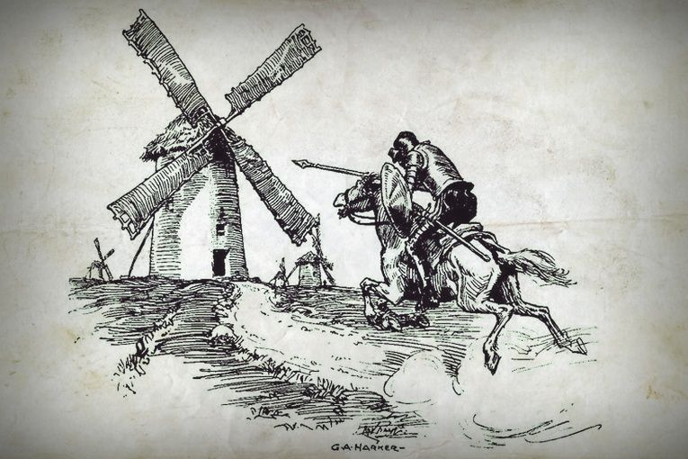
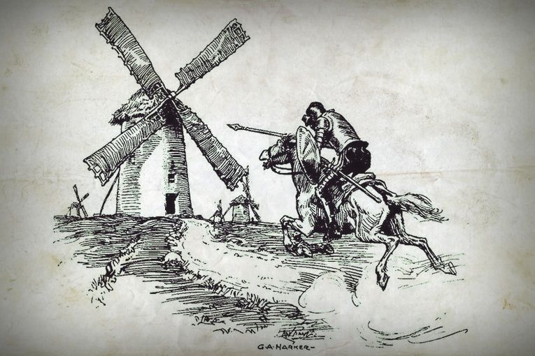

El libro relata las aventuras y desventuras de un hidalgo de 50 años llamado Alonso Quijano, quien después de perder la cordura de tanto leer novelas de caballeria, decide ser un caballero andante como aquellos que aparecen en sus libros favoritos.
 

Alonso Quijano es un hidalgo -es decir, un noble sin bienes y de escala social baja-, de unos cincuenta años, que vive en algún lugar de La Mancha a comienzos del siglo XVII. Su afición es leer libros de caballería donde se narran aventuras fantásticas de caballeros, princesas, magos y castillos encantados. Se entrega a estos libros con tanta pasión que acaba perdiendo el contacto con la realidad y creyendo que él también puede emular a sus héroes de ficción. Con este fin, recupera una armadura de sus antepasados y saca del establo a su viejo y desgarbado caballo, al que da el nombre de Rocinante. Como todo caballero, también necesita una dama, por lo que transforma el recuerdo de una campesina de la que estuvo enamorado y le da el nombre de Dulcinea del Toboso. Por último, se cambia el nombre por el de Don Quijote, que rima con el del famoso caballero Lanzarote (Lancelot). Don quijote sale en busca de aventura. Tiene un aspecto ridículo, pero está decidido a llevar a cabo hazañas heroicas. Sin embargo, aquí comienzan a surgir las primeras diferencias con la realidad: ve una posada y cree que es un castillo; exige al dueño que lo arme caballero en una escena cómica; intenta rescatar a un joven pastor que está siendo azotado por su amo; y ataca también a unos mercaderes que se burlan de él, pero es derribado y herido. Vuelve a su casa y consigue convencer a un labrador, Sancho Panza, para que sea su escudero. Sancho, al contrario que Don Quijote, es un hombre ignorante y práctico, pero poco a poco quedará contagiado por los sueños de su señor. Al poco de partir de nuevo, encuentran unos molinos de viento que Don Quijote ataca creyendo que son gigantes. Además, viven otras muchas aventuras: el hidalgo ataca un rebaño de ovejas creyendo que es un ejército; tiene un duelo a espada con un vizcaíno; libera a unos reclusos que después le atacan; encuentra una palangana de barbero y está convencido de que es un yelmo mágico; y vive situaciones cómicas en una posada. Incluso en una ocasión, Rocinante persigue unas yeguas. Después de todo, Don Quijote decide irse a vivir a lo alto de una montaña como penitencia para merecer el amor de su dama. Pero sus mejores amigos - un cura y un barbero- lo logran engañar y lo llevan a su aldea dentro de una jaula. En sus aventuras también encuentra diversos personajes que aportan tramas secundarias a la novela: unos pastores enamorados, un prisionero de los piratas, etc.
En la segunda parte, Don Quijote sale de nuevo con Sancho. Aunque menos famosa, esta parte es la preferida de muchos críticos. Don Quijote es ahora un personaje tratado con más respeto por el autor: a veces logra tener éxito en sus aventuras y es más reflexivo y consciente de sí mismo. Sancho, por el contrario, se ha vuelto un soñador. Por otro lado, los personajes con los que se encuentran ya los conocen a ambos, así que intentan aprovecharse de la situación. Unos duques los acogen en su palacio para reírse de ellos y hacer creer a Don Quijote que Dulcinea y él están bajo un hechizo de Merlín. Además, convierten a Sancho “gobernador” para cumplir una promesa que le había hecho su señor. Para su sorpresa, Sancho resulta ser un sabio governante. Don Quijote y Sancho llegan a Barcelona, en cuya playa Don Quijote es derrotado por el Caballero de la Blanca Luna -en realidad uno de sus amigos disfrazados. El hidalgo y desengañado caballero vuelve a su aldea a pesar de que Sancho le pide salir a vivir nuevas aventuras. Llega ya muy enfermo y, justo antes de morir, recupera la razón y pide perdón a todos por sus locuras.